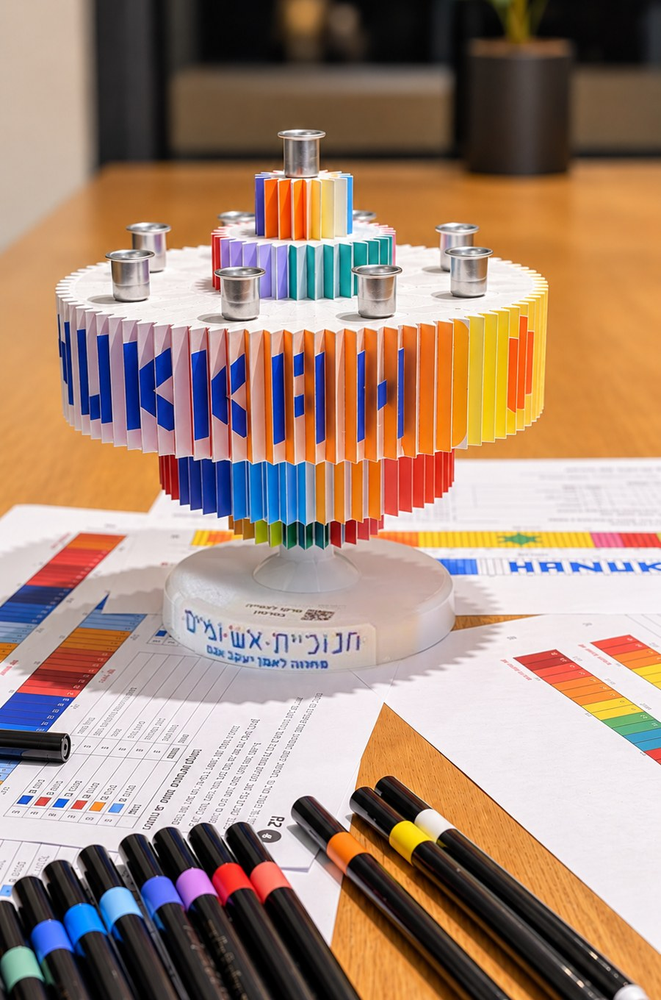
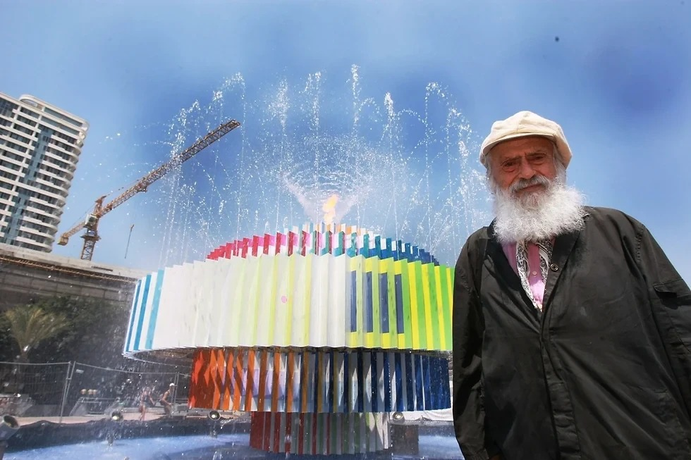
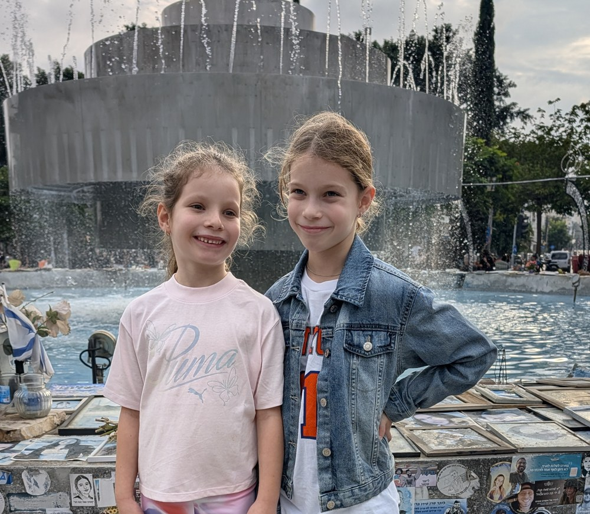
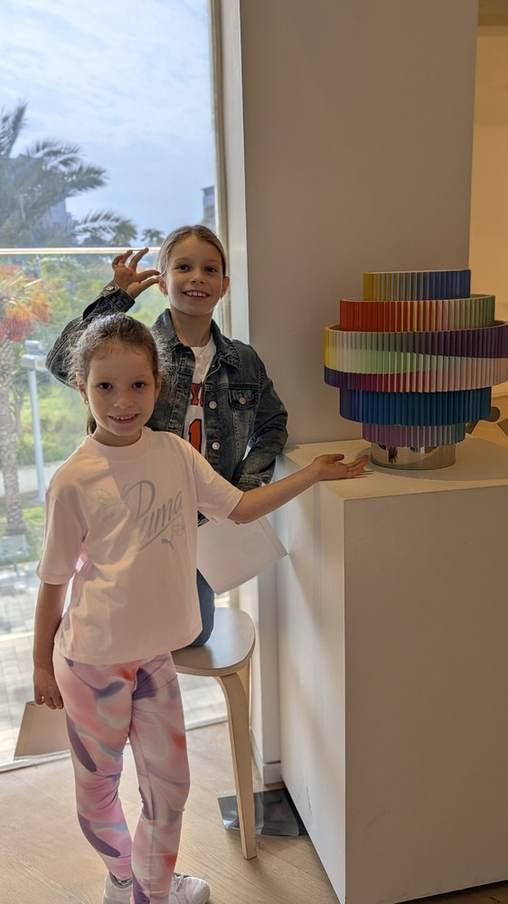
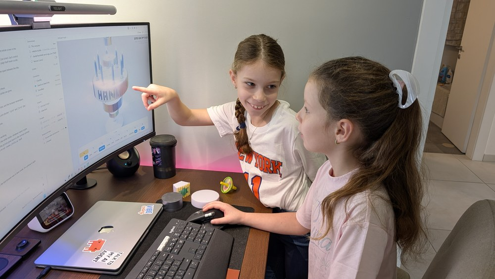
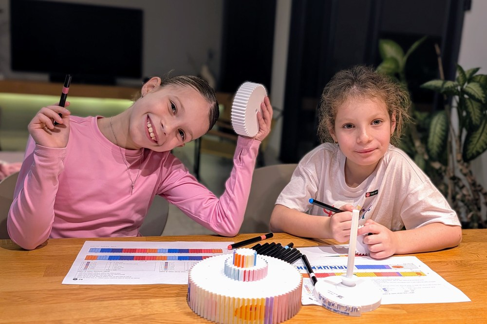

חנוכייה שהיא יצירת אמנות
כמו בציורים של יעקב אגם, החנוכייה שלנו משתנה כשהולכים סביבה. לכל שן בטבעות יש שתי פאות בשני צבעים, וכל צד מגלה ציור אחר.
בתוך הפסים מסתתרים סמלים של חג החנוכה: סביבון, סופגנייה, מגן דוד ועוד.
כמו בציורים של יעקב אגם, החנוכייה שלנו משתנה כשהולכים סביבה. לכל שן בטבעות יש שתי פאות בשני צבעים, וכל צד מגלה ציור אחר.
בתוך הפסים מסתתרים סמלים של חג החנוכה: סביבון, סופגנייה, מגן דוד ועוד.
תיארנו את המזרקה, ויחד עם בינה מלאכותית בנינו מודל תלת־ממדי ותוכנית צבעים לכל אחת מ־408 הפאות.
כל החלקים הודפסו בהדפסה תלת־ממדית מפלסטיק ממוחזר, בדיוק בכמות שצריך ובלי פסולת חיתוך.
נעמי וליבי צבעו ביד כל פאה, טבעת אחרי טבעת, לפי חוברת צביעה שהכנו, בצבעי אקריליק.

יעקב אגם (1928 עד 2026) נולד בראשון לציון. הוא מאבות האמנות הקינטית: יצירות שמשתנות כשהצופה זז. באפריל 2026 קיבל את פרס ישראל, וביוני 2026 הלך לעולמו, בגיל 98.
ב־1986 הוצבה בכיכר דיזנגוף המזרקה שלו: טבעות משוננות וצבעוניות שמסתובבות, סילוני מים, ומלמעלה להבת אש שפורצת מתוך המים. הלהבה שעולה מתוך המים הזכירה לנו את נרות חנוכה, שמאירים באמצע החורף.

נעמי וליבי אוהבות ליצור, לצייר ולצבוע. בעבודה על החנוכייה למדו שאמנות יכולה לזוז ולהשתנות, שמחשב ובינה מלאכותית יכולים להיות כלי יצירה כמו מכחול, ושהכי כיף זה לראות רעיון הופך לחפץ אמיתי שמדליקים בו נרות. החנוכייה היא המחווה שלנו ליעקב אגם, ואנחנו מקוות שהיא תאיר את החג בהמון צבעים.



